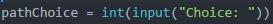

Today I learned that HTML is super annoying and sucks.
Just kidding.
Although semantic errors and debugging are annoying,
when your code finally works, it feels great.
I liked being able to customize and make a website from scratch.
Well, HTML and CSS, not Scratch.
Variables represent values. They can change.

A variable is like a bowl. What it is, is always the same
but what it holds can vary
Loops involove actions and a true or false questions.
A computer will check the answer for a question
and do an action repeatedly until the questions is true
A loop is like the game "Simon Says" You continue to say what the speaker says
until the speaker doesn't say "Simon Says"
A computer will do certain actions based on
whether the question for an answer is true of false
A conditional is like a barista. They ask you if you want caramel in your
drink. Based on whether you said yes or no, they will or
will not give you caramel
Functons are defined commands or set of actions.
They can take inputs and give you outputs.
You can call of them to use them
A function is like the action of making a sauce for a dish.
There are a few steps involved, but the steps and the recipe are
already known by the chef. It can be a step in
the bigger recipe (or bigger, overall program). It will take ingredients (or inputs) and
give an output (the finished sauce)
Lists in python are sets of data. In python, a sinlge list can be made up of different data types.
Lists are useful because they can hold different data, can be used to group data, and can be used when
you want to randomly select an option from a group or set.
We got to work on breadboarding. We made circuits with blinking LEDs, push buttons, and piezos
It was interseting to see how a push button works and how you could program piezos
to play songs by finding the frequency of the note you want
We also got to combine all of that knowledge with what we learned about servos to make a
robot that could sing, dance, and light up. The group I was a part of used
arduino to have the robot sing and dance to "Eye of the Tiger"
We got to spend a day using the Adafruit Circuit Playground. We were given starter codes so that we can
see how the different functions and features worked. The prompt
also gave us challenges and extensions so that we could practice using these different
functions and features. For example, I was able to code the adafruit
so that the LEDs would light up different colors depending
on the brightness the light sensor was exposed to
We got to visit the law firm, Gibson Dunn. They have clients such as Apple and Uber and have been involved
in over 100 Supreme Court cases. We were visited a number of speakers. It was interesting to see how ethical hackers could be used to improve the security of the
Pentagon. I enjoyed learning about the importance of cybersecurity and how tech is important,
even to legal institution. The creation of a
school that focuses on computer sciences and gives students access to resources such as mentors
is really cool. I was able to learn the importance of using my privilege and skills
to help others how aren't as fortunate or who are being done an injustice
Today I learned the different commands for JavaScript.
I really liked JavaScript because I liked being able to make a more dynamic and interactive website.
I edited my website so that when the user hovers over a certain part of the website,
the background of the site would change
Today we worked developing a site using. It was a rather meticulous process.
There were many steps and no room for mistakes or carelessness.
Although it was tedious and a little stressful, it gave me a new
appreciation for website development. I realize how much work, time, and effort
is put into the creation of sites (like instagram) that we use everyday
without thinking of the process of how they were created. This is a skill I think would be fulfilling to perfect, even if the journey may be hard.